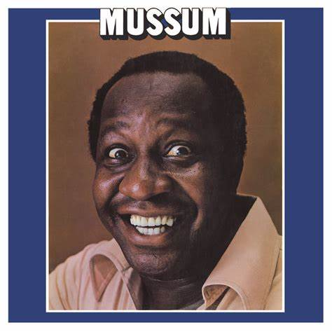

Curriculo

Anderson Santos
Analista de Suporte
an.vale@hotmail.com
linkedin.com/andersonvale
Formação Acadêmica
- Bacharel em Ciencias da Computação 2000-2004
- Técnico de Informática 2005-2006
- Técnico de Administração 1999-2000
- Voluntario da Escola da Familia
Experiência Profissional
- Altamente capacitados para fornecer informações sobre produtos e serviços da empresa.
- Conhecimento profundo em recebimento administração de pedidos, cobranças ou pagamentos.
- Experiência hands-on em rever, atualizar ou fazer alterações em contas de clientes.
Habilidades e Competências
- Facilidade de relacionamento, negociação, organização
- Conhecimento técnico para encaminhar soluções de problemas complexos de suporte;
- Conhecimento de melhores práticas para governança de TI (ex: ITIL, PMI)